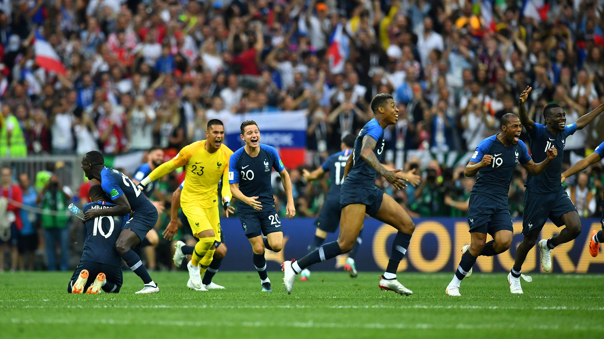

Además de la consagración de Francia, destacaron la implementación del VAR, el récord de penales y la sorpresiva eliminación de los candidatos.
A continuación un vistazo a los ganadores y los perdedores de Rusia 2018, donde Francia se llevó el título tras doblegar 4-2 a Croacia en la final.
Rusia, equipo de la casa al que no se le daban muchas esperanzas, sentó el tono del torneo al debutar goleando 5-0 a Arabia Saudita. Avanzó a la segunda ronda, se dio el lujo de eliminar a España y no llegó a las semifinales al perder una definición por penales. En el plano logístico, el torneo fue un rotundo éxito, pero habrá que esperar para ver si esto refleja cambios en Rusia o si fue sólo un espejismo.
Alemania fue el tercer equipo seguido eliminado en la fase de grupos después de salir campeón. Su temprana partida fue producto de la autosuficiencia, de no haber logrado el equilibrio justo entre juventud y experiencia y de una disputa en torno al origen turco de Mesut Ozil.
 Éste fue un mundial para el olvido de los tres jugadores más votados en la consulta para elegir al futbolista del año pasado. Cristiano Ronaldo brilló en un solo partido, anotando tres goles ante España, y su equipo Portugal fue eliminado en octavos de final por Uruguay. Lionel Messi no tuvo el menor apoyo en una selección argentina mediocre que sobrevivió a duras penas a la fase inicial para ser eliminada por Francia en octavos, 4-3.
Neymar no llegó en su mejor forma, debido a una lesión y no pudo impedir la derrota de Brasil en cuartos de final ante Bélgica.
Éste fue un mundial para el olvido de los tres jugadores más votados en la consulta para elegir al futbolista del año pasado. Cristiano Ronaldo brilló en un solo partido, anotando tres goles ante España, y su equipo Portugal fue eliminado en octavos de final por Uruguay. Lionel Messi no tuvo el menor apoyo en una selección argentina mediocre que sobrevivió a duras penas a la fase inicial para ser eliminada por Francia en octavos, 4-3.
Neymar no llegó en su mejor forma, debido a una lesión y no pudo impedir la derrota de Brasil en cuartos de final ante Bélgica.